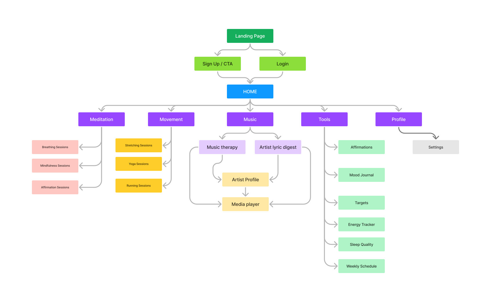
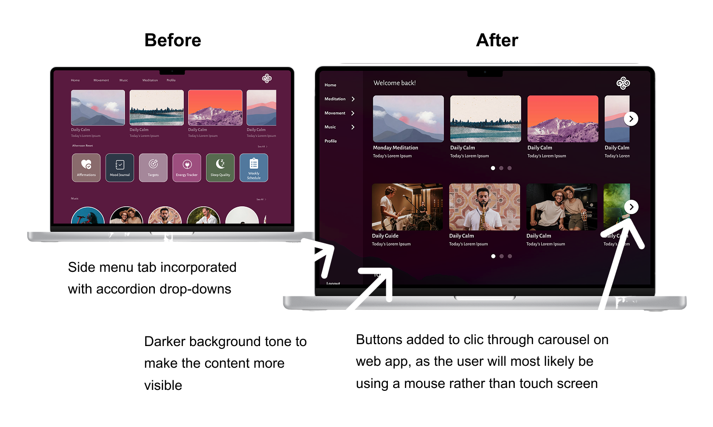

Meditation
Mindfulness, guided meditation, breathing and affirmation-based activities for stress reduction and regular reflective practice.
A web & mobile platform for youth mental wellbeing built on three pillars: Meditation , Movement , and Music .
Project duration: May ’23 – Sep ’23
Role: UX Designer (end-to-end)

Zenify is a web and mobile wellbeing platform for young people, built around three complementary modes of everyday support: Meditation , Movement and Music . Rather than treating wellbeing as a single activity, the product brings these three areas into one connected experience alongside lightweight tools for mood, sleep, routines and personal goals. The concept was designed to be easy to return to each day, giving users short activities and practical tools that can support healthier habits over time.
Mindfulness, guided meditation, breathing and affirmation-based activities for stress reduction and regular reflective practice.
Simple movement options including stretching, yoga and running, extending the experience beyond screen-based meditation.
Music-led relaxation with a player, artist content and lyric-based interaction designed to make wellbeing feel less clinical.
Energy tracking, sleep quality, weekly scheduling, mood journaling and personal targets to support reflection and habit building.
Accessing counselling and mental-health support is not always immediate. Cost, limited availability and waiting lists can leave young people without practical support at the point when they may need it most.
Zenify explored how a digital wellbeing platform could help bridge that everyday gap without positioning itself as a replacement for professional care. The challenge was to create something accessible enough to use regularly, while bringing together Meditation , Movement and Music as three complementary approaches to wellbeing.
Rather than asking users to wait until support becomes available or rely on a single type of activity, the product needed to offer simple tools for managing stress, building routines and developing healthier habits as part of everyday life.
The research phase combined persona development, user journey mapping, problem statements and competitive analysis to understand both the everyday needs of young users and the wider wellbeing-product landscape.
Four direct competitors — Headspace , Calm , Insight Timer and Spoke — were reviewed across navigation, content discovery, accessibility, branding, user flow and premium-content restrictions.
The research was used to examine where young people might need practical support in daily life, how easily existing products help users find relevant content, and where Zenify's three-part model could offer a distinct but coherent experience.
Two personas were developed from the research to represent different motivations for using Zenify. Paul focuses on affordable, flexible support for stress and social anxiety, while Maria represents a more music-led and routine-based approach to relaxation and wellbeing.
Paul is a university student who needs an affordable and accessible way to use meditation to manage exam stress and social anxiety.
Outgoing and socially active, but often under pressure from study, exams and the cost of attending wellbeing classes.
Reduce social anxiety, manage stress more effectively and balance academic demands with an active social life.
Balancing study and social commitments can feel overwhelming, while regular meditation or wellbeing classes may be too expensive.
Low-cost, flexible wellbeing activities that fit around his existing routine and are available whenever stress begins to build.
Maria wants to use music and familiar digital technology as a more engaging way to relax, regulate her mood and unwind after school.
Comfortable using iPad apps and digital media. Previous music therapy was helpful, but ongoing sessions were expensive.
Build a dependable daily relaxation routine and use music as a more interactive route into meditation and wellbeing.
Self-guided meditation can feel repetitive and difficult to sustain when there is little direction or variation.
Clear guidance, familiar digital interactions and varied music-based activities that make regular practice easier to maintain.
The original persona boards contain the fuller research profiles used during the design process. Use the controls below to view each persona.


The journey maps explored two different wellbeing contexts: Maria’s everyday routine and Paul’s attempt to introduce meditation into his study and social life. Mapping actions, emotions and pain points helped identify where Zenify could provide timely guidance rather than simply offering another library of wellbeing content.
Goal: Needs a simple tool to help structure her routine and support wellbeing at different points throughout the day.
| Journey Stage | Beginning of Day | Middle of Day | Evening | Night Time | Next Day |
|---|---|---|---|---|---|
| Actions |
|
|
|
|
|
| Emotional State | Tired and unmotivated, with some anxiety, although she is happy to see friends. | Distracted, unmotivated and lethargic. | Energetic but mentally restless; curious and engaged, yet easily distracted and increasingly tired. | Mind racing and prone to overthinking. | Still tired as the routine begins again. |
| Design Opportunities | Help Maria prepare for the day through a simple morning routine and low-effort wellbeing prompts. | Provide tools that encourage focus and help reduce distraction during homework and other responsibilities. | Introduce a more deliberate transition from stimulating activities into relaxation. | Offer calming audio, meditation or breathing activities that reduce stimulation and support winding down before bed. | Create an everyday wellbeing tool that can support different needs across the full daily routine rather than only one moment. |
Goal: Wants an accessible way to use meditation to manage study pressure, unwind and better balance his academic and social life.
| Journey Stage | Need Arises | Explores Options | Finds a Meditation | Uses Meditation | After Meditation |
|---|---|---|---|---|---|
| Actions |
|
|
|
|
|
| Emotional State | Stressed, overwhelmed and anxious. | Curious, but frustrated and uncertain about which option will actually help. | Intrigued and curious about trying the selected activity. | Gradually more relaxed and content, although still slightly distracted. | Calmer, but uncertain whether meditation will become something he returns to regularly. |
| Design Opportunities | Provide ready-to-use meditation options so Paul does not need an established routine before getting started. | Replace fragmented searching across videos, podcasts and blogs with a clearer, more personalised discovery experience. | Recommend activities based on available time, mood and the situation he is trying to manage. | Personalise sessions around preferences and provide enough guidance to reduce distraction. | Encourage repeat use through mobile access, progress feedback and simple prompts that help meditation become part of his routine. |
Four direct competitors were reviewed across product offering, positioning, usability, accessibility, navigation, branding and content. The audit showed that the products overlap heavily at a feature level, but differ much more clearly in how they package and position wellbeing .
Before the detailed comparison, the clearest strategic difference between the four products was how each framed its wellbeing offer.
A broad all-round wellbeing toolkit built around structured meditation, sleep and movement content.
A highly polished relaxation experience differentiated by ambience, visual identity and mood-led discovery.
A large discovery-led catalogue extending beyond meditation into yoga, work content and personal challenges.
A specialist music-led proposition combining psychologically themed audio, progress tracking and skills-based development.
A concise comparison of who each product serves, what it offers and the main reason a user might choose it over the others.
| Competitor | Type | Location | Business size | Price | Target audience | Product offering | Refined unique value proposition |
|---|---|---|---|---|---|---|---|
| Headspace | Direct | Global | Large | Free trial; €12.99 monthly or €57.99 annually | All ages; audit notes mostly 15–70 | Guided meditation, physical movement, Sleepcasts, music and broader self-help content. | The broad all-round toolkit: structured meditation, sleep and movement content inside a deliberately simple hierarchy. |
| Calm | Direct | Global | Large | Free version; premium €49.99 yearly | All ages | Guided meditation, movement, Sleepcasts and music, with mood-led suggestions and ambient backgrounds / sounds. | The immersive relaxation experience: strong visual identity, configurable ambient backgrounds and sounds, and content discovery linked to mood. |
| Insight Timer | Direct | Global | Large | Free version; premium €60 yearly | All ages; also includes a business subscription option | Guided meditation, music, movement, yoga, work-related content, personal challenges and broader discovery categories. | The breadth-and-discovery competitor: a very wide content catalogue extending into yoga, work, personal challenges and business use. |
| Spoke | Direct | Global | Small / Medium | £4.99 monthly or £34.99 yearly | Listed as all ages; audit felt the product leans strongly toward users in their 20s | Music-centred meditation / music therapy with topical audio, progress tracking, Skills / Psych / Sound techniques and personal affirmations. | The clearest specialist proposition: music-first wellbeing combined with psychologically themed content, progress tracking and skills-based development. |
The original positive and negative observations are retained below, with the overall impression shown at the top of each cell.
| Competitor | Desktop | App / Mobile | Features | Accessibility | User Flow | Navigation | Brand Identity | Tone | Descriptiveness |
|---|---|---|---|---|---|---|---|---|---|
| Headspace |
|
|
|
|
|
|
|
Friendly and encouraging |
|
| Calm |
|
|
|
|
|
|
|
Fun and indirect |
|
| Insight Timer |
|
|
|
|
|
|
|
Friendly and encouraging |
|
| Spoke | Not evaluated in the original audit. |
|
|
|
|
|
|
Motivating and encouraging |
|
The audit suggested an opportunity between the broad meditation libraries and Spoke’s specialist music-first approach. Zenify could differentiate through its three-pillar model : meditation for mental regulation, movement for physical release and music for a more expressive route into wellbeing — with all three supported by lightweight tracking and routine-building tools.
The information architecture was designed around Zenify’s three core areas — Meditation, Movement and Music — while keeping supporting wellbeing tools and account features easy to reach. The structure aimed to give users clear routes into different activities without making the platform feel overly complex.

Four participants tested the prototype and highlighted issues around navigation, page differentiation, mobile usability, interaction consistency and content discovery. The individual observations were then grouped into recurring themes and translated into actionable design improvements.
The tables below capture the issues and positive signals raised during each session. Recurring patterns are synthesised afterwards before being translated into design actions.
| Finding | Participant Observation |
|---|---|
| Repetitive pages | Several pages felt too similar, with limited differentiation between sections. |
| Back buttons not functioning | Some back buttons did not work as expected, causing confusion and interrupting navigation. |
| More menu access | The participant wanted an additional way to reach important pages directly from the menu. |
| Menu prominence | The menu control was not noticeable enough within the interface. |
| Music / Lyric Digest switching | Switching between the Music section and Lyric Digest should feel more direct and seamless. |
| Bottom navigation controls | Buttons and icons in the bottom menu felt too small. |
| Scrolling inconsistencies | Some scrolling interactions did not function correctly. |
| Spacing inconsistencies | Spacing between sections varied noticeably. |
| Border states | Some interface borders appeared highlighted while others did not. |
| Finding | Participant Observation |
|---|---|
| Similar page layouts | Many pages felt visually similar and could contain more differentiated information. |
| Content was easy to find | The participant was able to locate the requested page without difficulty. |
| Three-pillar concept | The participant responded positively to the Meditation, Movement and Music structure. |
| Music / Lyric Digest switching | A more seamless transition between Music and Lyric Digest was requested. |
| Bottom navigation controls | Bottom-menu buttons and icons should be larger. |
| Scrolling behaviour | Overall interaction felt smooth, but some scrolling controls did not behave correctly. |
| Spacing consistency | Spacing between sections was not always consistent. |
| Border states | Highlighted borders were not applied consistently. |
| Finding | Participant Observation |
|---|---|
| Video alongside audio | A video player was suggested as an additional option alongside audio content. |
| Sleep visualisation | Sleep-quality information would be easier to understand with graphs or chart-based visualisation. |
| Homepage quick links | More quick links were requested on the homepage. |
| Bottom navigation controls | Bottom navigation buttons and icons should be larger. |
| Mobile page length | Some pages felt too long for a mobile experience. |
| Finding | Participant Observation |
|---|---|
| Repetitive pages | Some screens felt repetitive and lacked sufficient differentiation. |
| Enhanced menu navigation | Additional menu options would make different areas easier to access. |
| Sleep visualisation | Graphs and visualisations would make sleep-quality information easier to interpret. |
| Homepage quick links | More quick links would reduce the effort required to reach relevant pages. |
| Mobile page layout | Mobile pages should be more concise and better reflect the dimensions of a phone interface. |
Comparing the four sessions revealed several issues that appeared more than once. These recurring observations carried more weight when deciding what should be addressed in the next iteration.
| Theme | Participants | What the Testing Suggested |
|---|---|---|
| Page differentiation | P1, P2, P4 | Several participants felt that screens were too repetitive. Consistency was useful, but individual sections needed stronger identities. |
| Bottom navigation size | P1, P2, P3 | Mobile navigation controls needed larger touch targets. |
| Menu access | P1, P4 | Primary navigation needed to be more noticeable and provide more direct routes to content. |
| Music / Lyric Digest connection | P1, P2 | Closely related music features should feel like part of one continuous experience. |
| Scrolling reliability | P1, P2 | Scrolling interactions needed more consistent behaviour. |
| Spacing consistency | P1, P2 | A clearer spacing system was required to strengthen visual consistency. |
| Selection / border states | P1, P2 | Active and inactive interface states needed to be easier to distinguish. |
| Sleep data visualisation | P3, P4 | Wellbeing data would be easier to interpret through graphical summaries. |
| Homepage quick links | P3, P4 | Frequently used areas should be available directly from the homepage. |
| Mobile content length | P3, P4 | Mobile screens needed more concise layouts and stronger content prioritisation. |
Participant observations were converted into specific actions that could be carried forward into the next design iteration.
| Area | Actionable Insight | Evidence |
|---|---|---|
| Navigation | Ensure all back buttons function consistently. | P1 |
| Navigation | Make the main menu more noticeable and prominent. | P1 |
| Navigation | Add more direct menu routes to important sections. | P1, P4 |
| Content | Increase visual and content differentiation between pages. | P1, P2, P4 |
| Interaction | Provide seamless switching between Music and Lyric Digest. | P1, P2 |
| Mobile | Increase the size of bottom-navigation buttons and icons. | P1, P2, P3 |
| Interaction | Resolve inconsistent scrolling behaviour. | P1, P2 |
| Visual Design | Apply consistent spacing between sections. | P1, P2 |
| Visual Design | Standardise highlighted and selected border states. | P1, P2 |
| Media | Explore a video player alongside the existing audio player. | P3 |
| Data | Add graphs and visual summaries to the Sleep Quality feature. | P3, P4 |
| Discoverability | Add more homepage quick links to frequently used content. | P3, P4 |
| Mobile | Make mobile pages more concise and better suited to smaller screens. | P3, P4 |
Two findings were explicitly prioritised as P0 because they directly affected users' ability to move confidently through the product.
Ensure every back button works consistently so users can move through the application without unexpected dead ends or navigation errors.
Increase the visibility and prominence of the primary menu so users can quickly recognise how to reach the application's main sections.

Alongside these usability-led changes, the visual system was refined with darker background tones and a clearer landing experience before the final high-fidelity design was assembled.

The final interface brought together the refined navigation, visual system and interaction patterns developed through research, testing and iteration.
The finished design reflects the usability priorities around menu visibility, mobile controls, page hierarchy, content discovery and consistency while retaining Zenify's overall wellbeing structure and everyday support tools.
Final interface overview following usability testing and prioritised refinement.

Zenify was designed as two connected experiences: a mobile app for accessible, everyday wellbeing activities and a web platform that adapts the same core content and visual identity to a larger-screen experience.
Both prototypes use the same three-pillar structure of Meditation, Movement and Music, while adapting navigation, interaction patterns and content presentation to suit each device.
The mobile experience was designed around quick, repeatable access to wellbeing activities throughout the day. Navigation prioritises the three core areas alongside supporting tools for mood, sleep, routines and personal goals.
The web experience carries the same wellbeing ecosystem onto a larger screen, using the additional space to create clearer content hierarchy, persistent navigation and more expansive layouts without changing the underlying product structure.
Zenify was developed as a cross-platform wellbeing concept spanning mobile and web, with a consistent visual identity and a structure designed around accessible everyday use. The four-participant usability study identified concrete issues in navigation, mobile controls, content hierarchy and consistency, which informed the final round of refinement. The next stage would be to test the concept with a broader and more diverse participant group, strengthen the design system and microinteractions, and continue validating accessibility, emotional tone and whether the daily tools genuinely support sustainable wellbeing habits.